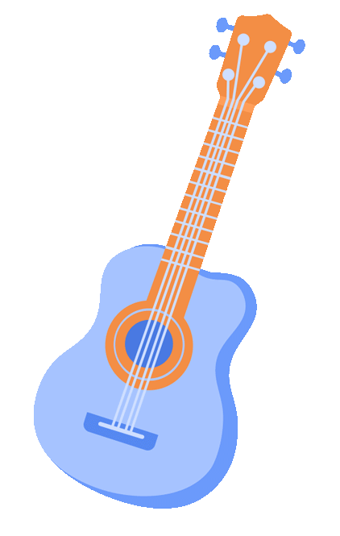
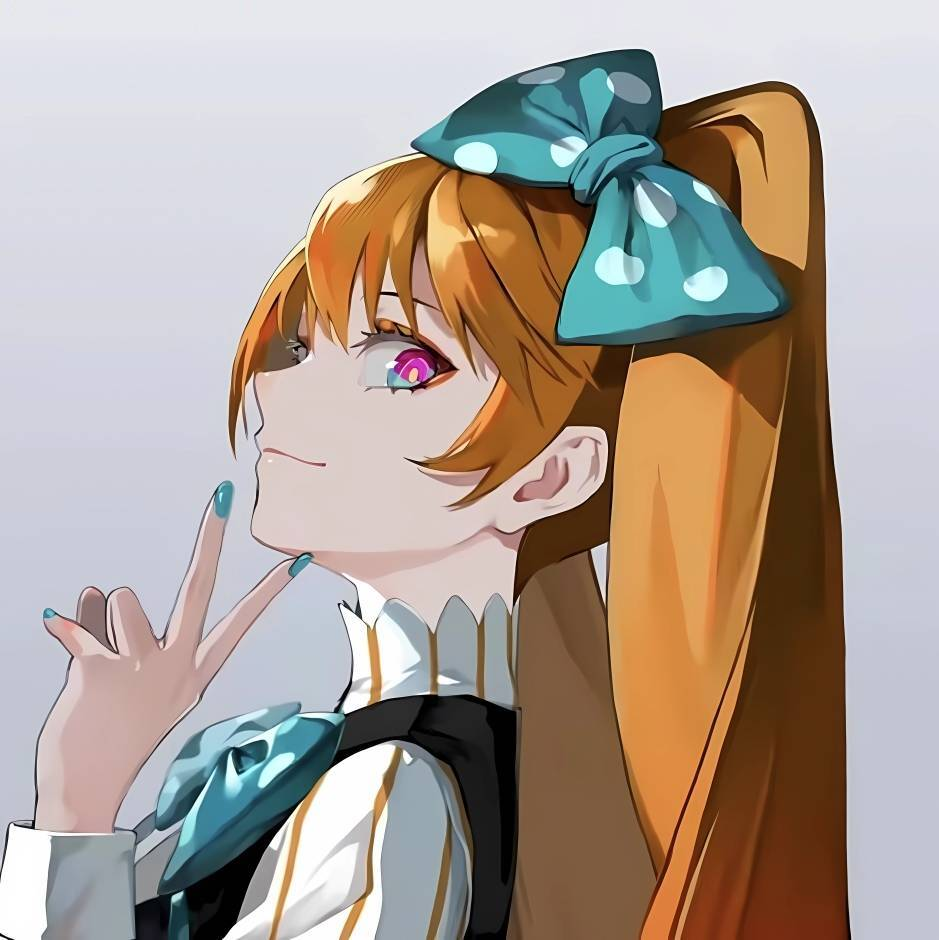

艺术教育中心
CAMPUS MUSIC TALK
鑫空回响
鑫信腾 ITC 乐队校园音乐分享会
让旋律穿过校园，也让真实的故事、选择与热爱，在这一刻彼此回响。

一场现场乐队演出与主题对谈：从学生时代与音乐结缘，到创业路上的选择，再到一起做音乐、一起做事的信任。
MUSIC · STORIES · CHOICES
LIVE INFORMATION


ABOUT THE NIGHT
当音乐成为故事的章节
当一段旋律把我们带回学生时代，当一次对谈照见正在发生的选择，音乐便不只属于舞台，也可以成为彼此理解的开始。三位来自鑫信腾 ITC 乐队的嘉宾，将用演出与交谈分享他们从校园到创业、从相识到同行的真实经历。
PART.01
演出与对谈 · 四个章节
CHAPTER 1 · 学生时代
从校园生活与音乐启蒙开始，认识故事中的三位主角。
CHAPTER 2 · 创业历程
聊聊从职场走向创业的关键选择，以及热爱如何始终陪伴前行。
CHAPTER 3 · 我们仨
听三人如何因音乐建立关系，在工作中分工、协作与信任。
CHAPTER 4 · 致年轻人
围绕选择、热爱、成长与职业，为正站在人生路口的你留下一点回应。
PART.02
与他们面对面

企业嘉宾：黄培坤、谢中达、董鹏（鑫信腾 ITC 乐队）。
主持人：艺术教育中心何其乐。
执行团队：艺术教育团队。
PART.03
预约入场席位
请在此处插入索票二维码或报名入口。
建议文案：扫描二维码 / 点击阅读原文，预约入场。
把一首歌听进故事里，
把一次相遇留在校园中。
9 月 28 日，我们现场见。